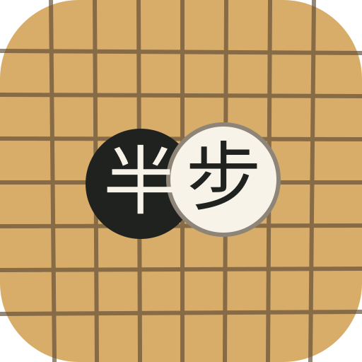
柔边原型 · 第五批 20 个变体
只围绕第四批 14 号继续细化：1–5 去绿边，6–10 圆形截面棋盘，11–15 字体变化，16–20 完全无文字。
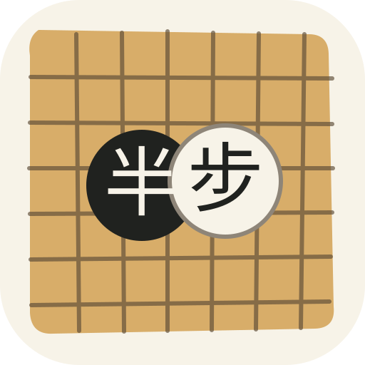
02 · 无绿边·象牙底
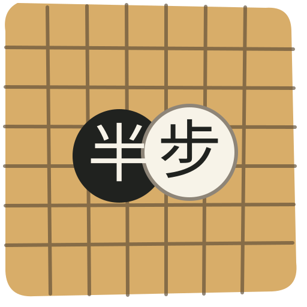
03 · 无绿边·柔形满版
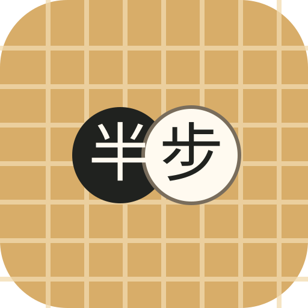
04 · 无绿边·浅线棋盘
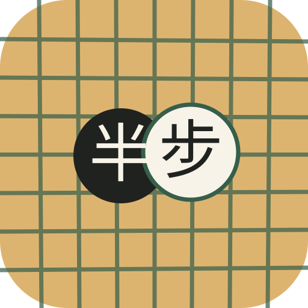
05 · 无绿边·深线棋盘
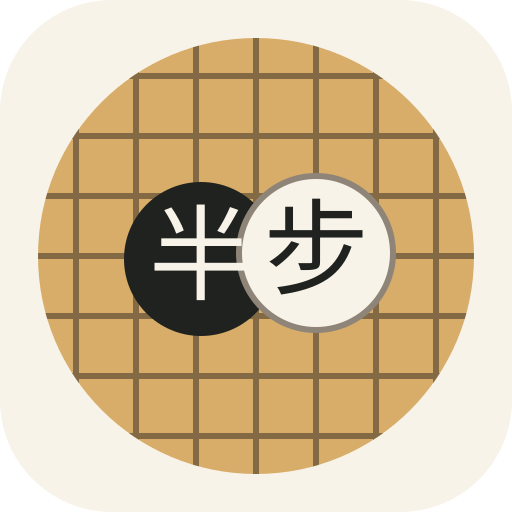
06 · 圆盘·纯净切面
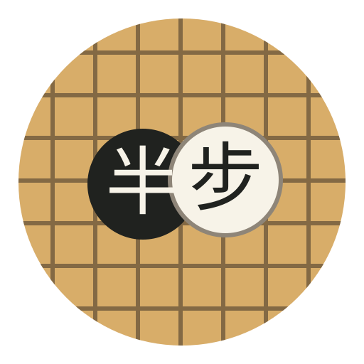
07 · 圆盘·透明外围
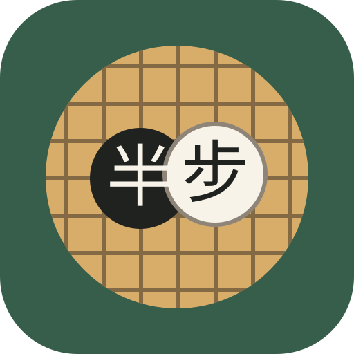
08 · 圆盘·深绿外场
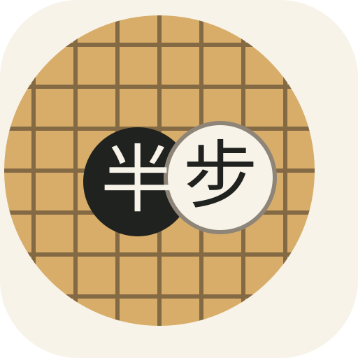
09 · 圆盘·偏心截面
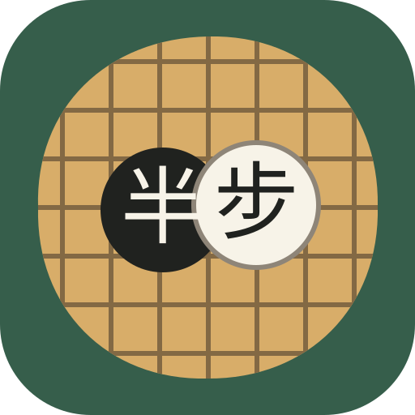
10 · 圆盘·柔圆棋域
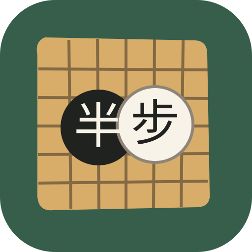
11 · 字体·宋体端正
12 · 字体·楷体书写
13 · 字体·隶书厚重
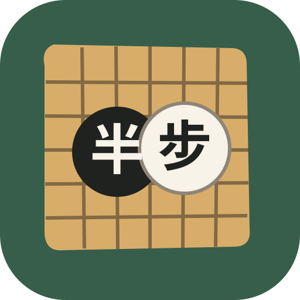
14 · 字体·黑体现代
15 · 字体·仿宋清雅
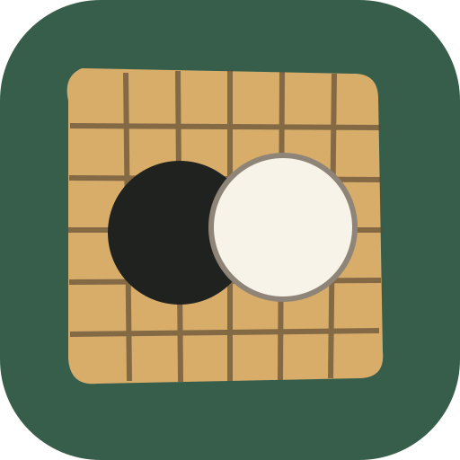
16 · 无文字·纯棋子
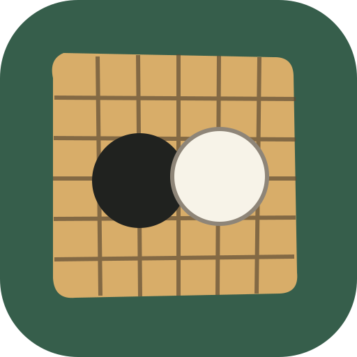
17 · 无文字·小棋子
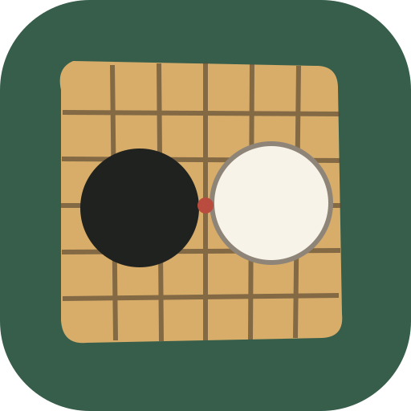
18 · 无文字·一步间距
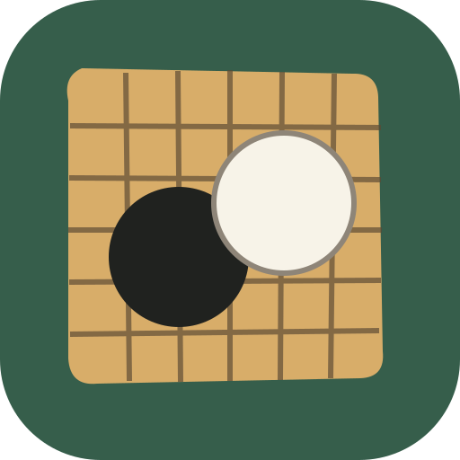
19 · 无文字·斜向落子
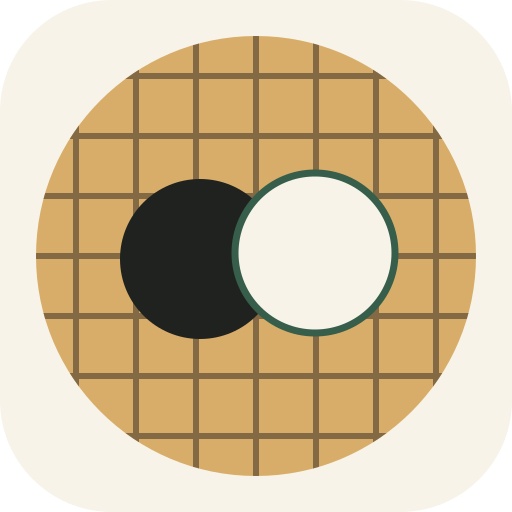